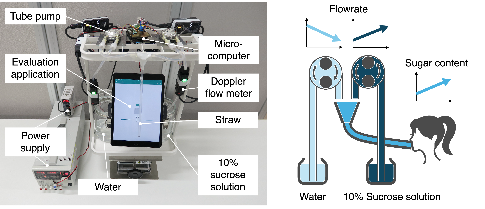
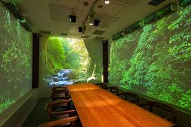
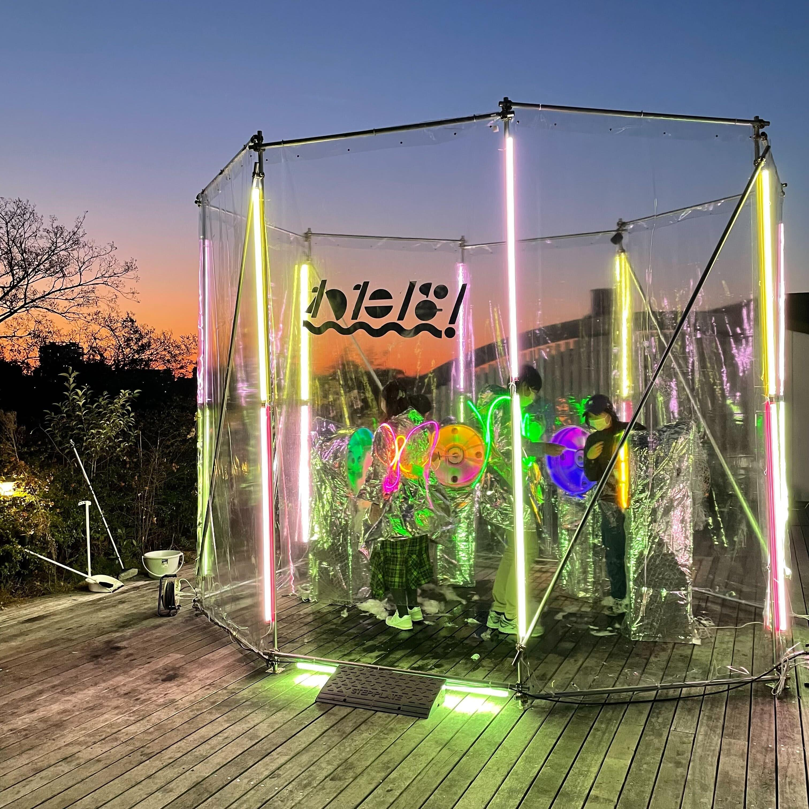
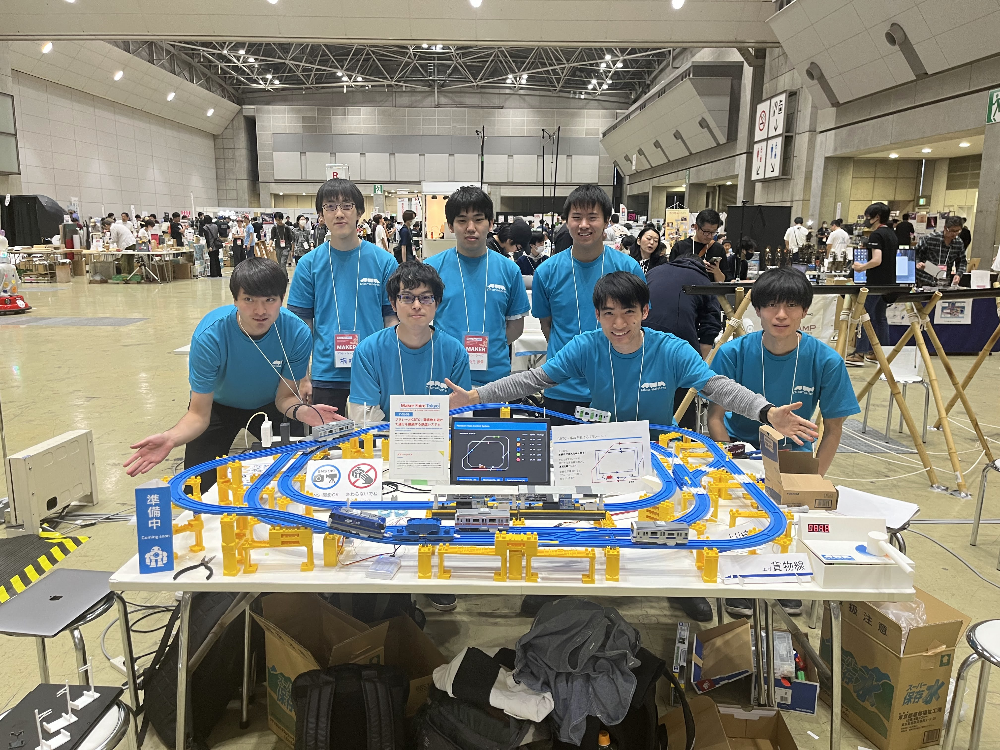

単調な日常を、演奏するように楽しめる体験へ。 Transforming Monotonous Daily Life into a Playable Performance. 食事や歩行など、日常には飽きてしまう繰り返しのプロセスに溢れています。私は、そこにインタラクション技術を組み込むことで、既定の時系列構造をユーザー自身が主体的に書き換える「演奏体験」へと変容させます。 Daily life is filled with repetitive processes like eating and walking. By integrating interaction technology, I transform these predefined temporal structures into a "performance experience" that users can proactively rewrite.
Creative Projects

DynaDrink
飲んでいる途中に濃度を変え、甘さの錯覚や不可能な飲料体験を生み出す。 Creating sweetness illusions and impossible beverage experiences by changing concentration during consumption.

Beatim
音楽の中でドラムを叩くように歩き、身体運動を演奏へと昇華させる。 Walking like playing drums in music, sublimating physical movement into a performance.

大阪万博「水空」 EXPO 2025 "Suikuu"
映像と音声と気流のクロスモーダルな体験で空気清浄感を高める食事体験。 A cross-modal dining experience enhancing air cleanliness through video, sound, and airflow.

わたぱ！ Watapa!
巨大わたあめ機に入って「自分を食べる」という全く新しい体験設計。 A completely new experience design where you enter a giant cotton candy machine and "eat yourself".

プラレーラーズ Plarailers
鉄道玩具を電子改造し、高度な鉄道運行システムを構築。 Modifying toy trains to build advanced railway operation systems.
Research Publications
国際論文誌（査読付き） Journal Articles (Peer-reviewed)
国際会議（査読付き） International Conferences (Peer-reviewed)
国内会議（査読付き） Domestic Conferences (Peer-reviewed)
国内会議（査読なし） Domestic Conferences (Non-peer-reviewed)
Social Implementation
Education
卒業 B.Eng. in Mechanical Engineering
Skills
Fellowship
Work Experience
2024.04 - 現在Present